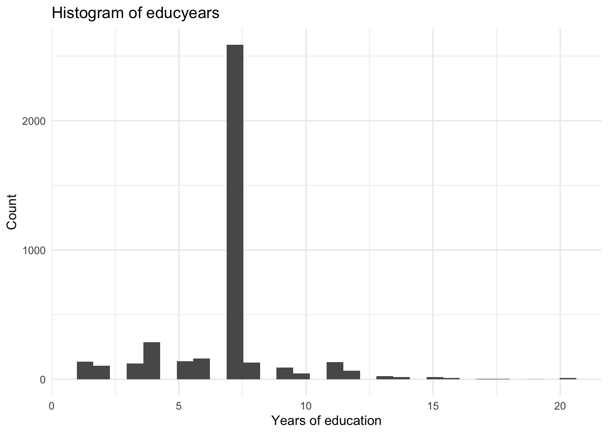

Microeconometrics
Week 1 - Introduction to R
Week 1 - Introduction to R
Introduction
Goal for today
The goal for today is to give you a brief introduction to R and R Markdown
We will be using two small datasets to get you familiar with the program
- Class website
A note: if you are completely new to R, the first few weeks will be a slog
- It will get better, I promise
Much of the material covered today comes from two (free!) sources:
What are R and RStudio?
- R is a commonly used statistical program (and language)
- It is free and open source, which means you can use this after graduation, without paying for it
- R is CaSe SeNsItIvE
- To work with R, we want to use an accompaniment called RStudio
- RStudio is what is referred to as an integrated development environment (IDE)
- It is not the only option (I use VS Code, for example), but it is the most common
- It makes working with R much easier
- Whenever you start R, you want to start RStudio
- RStudio will start R for you
Some important considerations
- One of our goals is to make reproducible research
- This means that we want to be able to share our code and have others be able to replicate our results
- To do this, we will use “scripts” that contain our code
- A script should be self contained
- This means that it should contain all of the code necessary to run the analysis
- A well-written script should allow me to do everything without any additional information
- We will also use R Markdown to create documents
- R Markdown is a way to combine text and code
- This allows us to create documents that are reproducible
- We will use R Markdown to create our homework assignments
- More on this in a bit
The RStudio interface
The RStudio interface
The RStudio interface
The RStudio interface
But we’re missing something… what is it?
The script
Some notes
- You can add comments to your script using a hashtag (#)
- At the top of ALL my scripts, I have a comment that says what the script does.
- At the top of your script, write a comment. It should say “# Week 1 - Introduction to R”
- I put LOTS of comments in my scripts. This is good practice.
- You can run a line of code by clicking the “Run” button
- There are also shortcuts. On Mac it is command + enter. On windows it is control + enter. You can change these if you want.
- You can run multiple lines of code by highlighting them and clicking the “Run” button (or the shortcut)
- We will practice these later
R Basics
Object types
- R has a few different types of objects
- The most common are vectors, matrices, and data frames
- A “tibble” is a type of data frame used by the tidyverse package (more below)
- We will use data frames almost exclusively since we are working with datasets, but vectors are common, too
- The most common are vectors, matrices, and data frames
- You can create a vector using the c() function:
- Note how we create a new object using the assignment operator, <-. You can also use =.
vec <- c(1, 2, 3, 4)
vec[1] 1 2 3 4Object types
- You can check what type of object something is by using the class() function
- For example, if I want to check what type of object vec is, I would write class(vec)
- Note that the output is “numeric”
- This is because vec is a vector of numbers
- If I want to check whether it is a vector, I can write is.vector(vec)
- Note that the output is TRUE
vec <- c(1, 2, 3, 4)
class(vec)[1] "numeric"is.vector(vec)[1] TRUEFirst things first: the working directory
- The working directory is the folder that R is currently working in
- This is where R will look for files
- This is where R will save files
- This is where R will create files
- You can always write out an entire file path, but this is tedious
- More importantly, it makes your code less reproducible since the path is specific to YOUR computer
- One nice thing about R is that the working directory will automatically be where you open the script from
- Let’s try this. Save your script to a folder on your computer, then open the script from that folder.
First things first: the working directory
The working directory should be where you opened the file from. Check it like this:
getwd()[1] "/Users/Josh/Dropbox/KDIS/Classes/applied-microeconometrics/weeks/week1"R packages
- R is a language that is built on packages
- Packages are collections of functions that do specific things
- R comes with a set of “base” packages that are installed automatically
- We are going to use one package consistently, called the “tidyverse”
- This consists of a set of packages that are designed to work together, with data cleaning in mind
R packages
The one exception to always using a script? I install packages in the CONSOLE. You can install packages like this:
install.packages("tidyverse")Loading R packages in your script
We need to load any R packages we want to use at the very top of the script. You should have a comment on line one, so on line two write:
library("tidyverse")This will load the tidyverse package.
Loading data
- Go to the class website and download the data for today.
- Put it in your WORKING DIRECTORY (where the script is)
- We will use the read_csv() function to load the data
- This function is part of the tidyverse package
- It will create a data frame
- We need to NAME the object (data frame). As before, note the assignment operator (<-). You can actually use = though.
library(tidyverse)
# read in the data
data <- read_csv("data.csv")Objects in memory
The data frame should show up in the upper right hand corner of RStudio.
Objects in memory
Click on the arrow and it will show more information.
Objects in memory
- The data frame is a matrix
- Each row is an observation and each column is a variables
- We can also see the names of the columns like this:
colnames(data) [1] "res_id" "ability" "age"
[4] "educyears" "isfarmer" "yearsfarming"
[7] "yearsmanagingfarm" "outsidewage" "worriedaboutcropprices"
[10] "worriedaboutcropyields"- This is the kind of thing I might do in the console since it’s not really required for the script.
Calling variables in R
- Some of you might be used to Stata
- One big difference between the two is that Stata generally only has one data frame in memory at a time
- This means that you can call a variable without referencing the data frame
- In R, if you want to look at a variable, you have to tell R which data frame it is in
- This is done with the $ operator
- For example, if I want to look at the variable “age” in the data frame “data”, I would write data$age
- Let’s look at summary statistics for age:
summary(data$age) Min. 1st Qu. Median Mean 3rd Qu. Max.
18.00 34.00 42.00 43.54 52.00 87.00 Summary statistics for the entire data frame
- You can also use summary on the data frame instead of a single column
- It helps to think of a data frame as rows and columns. For variables, you want to call specific columns.
- Look at the difference here (it cuts off because of the size of the slide):
summary(data) res_id ability age educyears
Min. : 501 Min. : 10.00 Min. :18.00 Length:7209
1st Qu.:2783 1st Qu.: 51.00 1st Qu.:34.00 Class :character
Median :4714 Median : 59.00 Median :42.00 Mode :character
Mean :4775 Mean : 58.66 Mean :43.54
3rd Qu.:6764 3rd Qu.: 67.00 3rd Qu.:52.00
Max. :8955 Max. :100.00 Max. :87.00
isfarmer yearsfarming yearsmanagingfarm outsidewage
Length:7209 Min. :-9.00 Min. :-9.00 Min. :2.000e+03
Class :character 1st Qu.:18.00 1st Qu.: 6.00 1st Qu.:3.500e+06
Mode :character Median :26.00 Median :14.00 Median :1.000e+10
Mean :28.02 Mean :15.94 Mean :7.156e+09
3rd Qu.:38.00 3rd Qu.:22.00 3rd Qu.:1.000e+10
Max. :70.00 Max. :70.00 Max. :1.000e+10
NA's :219 NA's :219 NA's :216
worriedaboutcropprices worriedaboutcropyields
Length:7209 Length:7209
Class :character Class :character
Mode :character Mode :character
Calling rows/columns of a data frame (matrix)
- Think about how we refer to rows and columns in a matrix.
- We use the row and column number, in that order.
- For example, if I want the first row and second column of a matrix \(X\), mathematically I could write \(X_{1,2}\)
- We do the same thing in R
- If I want the first row and second column of the data frame “data”, I would write data[1,2]
- Note that we use square brackets instead of parentheses
- Note that we use a comma to separate the row and column
data[1,2]# A tibble: 1 × 1
ability
<dbl>
1 74Calling columns of a data frame (matrix)
- We can call entire columns of a data frame by leaving the row blank
- For example, if I want the second column of the data frame “data”, I would write data[,2]
- Note that the second column is the ability variable
colnames(data) [1] "res_id" "ability" "age"
[4] "educyears" "isfarmer" "yearsfarming"
[7] "yearsmanagingfarm" "outsidewage" "worriedaboutcropprices"
[10] "worriedaboutcropyields"data[,2]# A tibble: 7,209 × 1
ability
<dbl>
1 74
2 42
3 67
4 54
5 57
6 72
7 51
8 65
9 54
10 24
# ℹ 7,199 more rowsMissing variables R
- Missing variables are denoted by NA
- This is different from Stata, which uses a period (.)
- Note that this is only how the PROGRAM stores missing variables. Sometimes the data itself has different missing values.
- For example, take a look at the first ten rows of the data frame (also note how I call the first ten rows and leave out the first column!):
data[1:10,-1]# A tibble: 10 × 9
ability age educyears isfarmer yearsfarming yearsmanagingfarm outsidewage
<dbl> <dbl> <chr> <chr> <dbl> <dbl> <dbl>
1 74 83 16 Yes 60 46 3000000
2 42 27 7 Yes 17 17 9999999999
3 67 49 7 Yes 20 5 6000000
4 54 50 7 Yes 15 10 9999999999
5 57 70 4 Yes 40 26 9999999999
6 72 45 7 Yes 15 15 800000
7 51 58 7 Yes 30 25 2000000
8 65 41 7 Yes 20 15 9999999999
9 54 45 7 Yes 20 10 300000
10 24 70 <NA> Yes 60 50 9999999999
# ℹ 2 more variables: worriedaboutcropprices <chr>,
# worriedaboutcropyields <chr>Variable types
- R also has a few different types of variables
- The most common are numeric, character, and logical
- Look at the previous code again:
data[1:10,-1]# A tibble: 10 × 9
ability age educyears isfarmer yearsfarming yearsmanagingfarm outsidewage
<dbl> <dbl> <chr> <chr> <dbl> <dbl> <dbl>
1 74 83 16 Yes 60 46 3000000
2 42 27 7 Yes 17 17 9999999999
3 67 49 7 Yes 20 5 6000000
4 54 50 7 Yes 15 10 9999999999
5 57 70 4 Yes 40 26 9999999999
6 72 45 7 Yes 15 15 800000
7 51 58 7 Yes 30 25 2000000
8 65 41 7 Yes 20 15 9999999999
9 54 45 7 Yes 20 10 300000
10 24 70 <NA> Yes 60 50 9999999999
# ℹ 2 more variables: worriedaboutcropprices <chr>,
# worriedaboutcropyields <chr>Variable types
- dbl is short for double, which is a numeric variable (the “type” of numeric variable is about how much memory is needed to store it)
- chr is short for character, which is a string of characters (text)
- Surprisingly, in our previous example, educyears was a character string even though it seemed to be a number
- Let’s look at the possible values of educyears using the unique() function, which outputs a vector:
unique(data$educyears) [1] "16" "7" "4" NA
[5] "11" "6" "13" "5"
[9] "8" "10" "12" "9"
[13] "2" "3" "15" "14"
[17] "20" "18" "17" "1"
[21] "Not Mentioned" "19" Variable types
- Interesting! It seems that there is a “Not Mentioned” value.
- What if we want to replace those with missing, instead?
- Let’s talk through the following code
- First note how it refers to a specific column and then a specific row
- Also note how it uses two equal signs (==) to check whether the value is “Not Mentioned”
- This is similar to Stata!
# replace "Not Mentioned" with NA
data$educyears[data$educyears == "Not Mentioned"] <- NA
# check that it worked by looking at the unique values
unique(data$educyears) [1] "16" "7" "4" NA "11" "6" "13" "5" "8" "10" "12" "9" "2" "3" "15"
[16] "14" "20" "18" "17" "1" "19"# turn into numeric
data$educyears <- as.numeric(data$educyears)
class(data$educyears)[1] "numeric"Pipes
- One of the most useful things in R is the pipe operator (%>%)
- This is part of the tidyverse package
- It allows you to chain commands together
- It makes your code much easier to read
- It makes your code much easier to write
- It makes your code much easier to debug
- It makes your code much easier to share
- It makes your code much easier to reproduce
- It’s easy to use but it will take some time for you to get used to the names of the functions we can use with it
- This also goes for other tasks in R, not just with the pipe operator
Pipes example
Here is an example of how we can use pipes with the mutate() function in tidyverse
- We are also going to use ifelse() to make this work
data <- data %>%
mutate(educyears = ifelse(educyears == "Not Mentioned", NA, educyears), # if educyears=="Not Mentioned", replace
educyears = as.numeric(educyears)) # replace educyears as numeric (instead of character)
summary(data$educyears) Min. 1st Qu. Median Mean 3rd Qu. Max. NA's
1.000 7.000 7.000 6.735 7.000 20.000 3113 Note that we could wrap as.numeric() around the ifelse() command to do it on one line!
data <- data %>%
mutate(educyears = as.numeric(ifelse(educyears == "Not Mentioned", NA, educyears))) # wrapped into one line
summary(data$educyears) Min. 1st Qu. Median Mean 3rd Qu. Max. NA's
1.000 7.000 7.000 6.735 7.000 20.000 3113 Missings and functions in R
In Stata, by default, functions ignore missing values
- R does not do this by default. Look at this:
data <- data %>%
mutate(educyears = as.numeric(ifelse(educyears == "Not Mentioned", NA, educyears))) # wrapped into one line
mean(data$educyears)[1] NAIf there are any missing values, the function will evalute to missing!
- But we can also do this:
data <- data %>%
mutate(educyears = as.numeric(ifelse(educyears == "Not Mentioned", NA, educyears))) # wrapped into one line
mean(data$educyears, na.rm = TRUE) # BE CAREFUL WITH THIS! Make sure it is indeed what you want to do.[1] 6.735107Functions and storing values
The mean() function in the previous slide outputs a single value - That means we could store that value as an object:
data <- data %>%
mutate(educyears = as.numeric(ifelse(educyears == "Not Mentioned", NA, educyears))) # wrapped into one line
meaneduc <- mean(data$educyears, na.rm = TRUE)
sdeduc <- sd(data$educyears, na.rm = TRUE)
meaneduc[1] 6.735107sdeduc[1] 2.404086How is this helpful? We can use these values later in our script!
Functions and mutate()
We can combine the mean() and sd() functions within mutate to create a new, standardized variable:
data <- data %>%
mutate(educyears = as.numeric(ifelse(educyears == "Not Mentioned", NA, educyears)), # wrapped into one line
educyears_std = (educyears - mean(educyears))/sd(educyears))
summary(data$educyears_std) Min. 1st Qu. Median Mean 3rd Qu. Max. NA's
NA NA NA NaN NA NA 7209 Oh no! what happened?
Functions and mutate()
We can combine the mean() and sd() functions within mutate to create a new, standardized variable:
data <- data %>%
mutate(educyears = as.numeric(ifelse(educyears == "Not Mentioned", NA, educyears)), # wrapped into one line
educyears_std = (educyears - mean(educyears, na.rm = T))/sd(educyears, na.rm = T))
summary(data$educyears_std) Min. 1st Qu. Median Mean 3rd Qu. Max. NA's
-2.3856 0.1102 0.1102 0.0000 0.1102 5.5176 3113 Note that we can shorten TRUE to T (or FALSE to F).
Visualizations with ggplot2
- ggplot2 is a flexible way to create visualizations in R
- The basic idea is that you create a plot object and then add layers to it
- Let’s create a histogram of educyears
Visualizations with ggplot2
data <- data %>%
mutate(educyears = as.numeric(ifelse(educyears == "Not Mentioned", NA, educyears)))
# we call ggplot() and NOT ggplot2()
ggplot() + # note how we use + here, NOT the pipe operator
geom_histogram(data = data, aes(x = educyears)) # the histogram with geom_histogram# data = data tells R to use the data frame "data", and the aes() is the aesthetic
# only an x value here since a histogram uses just a SINGLE valueVisualizations with ggplot2
data <- data %>%
mutate(educyears = as.numeric(ifelse(educyears == "Not Mentioned", NA, educyears)))
# we can save the plot as an object
g1 <- ggplot() +
geom_histogram(data = data, aes(x = educyears))
g1
Visualizations with ggplot2
data <- data %>%
mutate(educyears = as.numeric(ifelse(educyears == "Not Mentioned", NA, educyears)))
# lots of ways to change the plot
g1 <- ggplot() +
geom_histogram(data = data, aes(x = educyears)) +
labs(title = "Histogram of educyears",
x = "Years of education",
y = "Count")
g1
One more example
data <- data %>%
mutate(educyears = as.numeric(ifelse(educyears == "Not Mentioned", NA, educyears)))
g1 <- ggplot() +
geom_histogram(data = data, aes(x = educyears)) +
labs(title = "Histogram of educyears",
x = "Years of education",
y = "Count") +
theme_minimal()
g1
Let’s try this with a NEW dataset
First install a new package that has a dataset we will use (you can do this in the console):
install.packages("nycflights13")Now let’s see:
library(nycflights13)
glimpse(flights)Rows: 336,776
Columns: 19
$ year <int> 2013, 2013, 2013, 2013, 2013, 2013, 2013, 2013, 2013, 2…
$ month <int> 1, 1, 1, 1, 1, 1, 1, 1, 1, 1, 1, 1, 1, 1, 1, 1, 1, 1, 1…
$ day <int> 1, 1, 1, 1, 1, 1, 1, 1, 1, 1, 1, 1, 1, 1, 1, 1, 1, 1, 1…
$ dep_time <int> 517, 533, 542, 544, 554, 554, 555, 557, 557, 558, 558, …
$ sched_dep_time <int> 515, 529, 540, 545, 600, 558, 600, 600, 600, 600, 600, …
$ dep_delay <dbl> 2, 4, 2, -1, -6, -4, -5, -3, -3, -2, -2, -2, -2, -2, -1…
$ arr_time <int> 830, 850, 923, 1004, 812, 740, 913, 709, 838, 753, 849,…
$ sched_arr_time <int> 819, 830, 850, 1022, 837, 728, 854, 723, 846, 745, 851,…
$ arr_delay <dbl> 11, 20, 33, -18, -25, 12, 19, -14, -8, 8, -2, -3, 7, -1…
$ carrier <chr> "UA", "UA", "AA", "B6", "DL", "UA", "B6", "EV", "B6", "…
$ flight <int> 1545, 1714, 1141, 725, 461, 1696, 507, 5708, 79, 301, 4…
$ tailnum <chr> "N14228", "N24211", "N619AA", "N804JB", "N668DN", "N394…
$ origin <chr> "EWR", "LGA", "JFK", "JFK", "LGA", "EWR", "EWR", "LGA",…
$ dest <chr> "IAH", "IAH", "MIA", "BQN", "ATL", "ORD", "FLL", "IAD",…
$ air_time <dbl> 227, 227, 160, 183, 116, 150, 158, 53, 140, 138, 149, 1…
$ distance <dbl> 1400, 1416, 1089, 1576, 762, 719, 1065, 229, 944, 733, …
$ hour <dbl> 5, 5, 5, 5, 6, 5, 6, 6, 6, 6, 6, 6, 6, 6, 6, 5, 6, 6, 6…
$ minute <dbl> 15, 29, 40, 45, 0, 58, 0, 0, 0, 0, 0, 0, 0, 0, 0, 59, 0…
$ time_hour <dttm> 2013-01-01 05:00:00, 2013-01-01 05:00:00, 2013-01-01 0…Let’s look at some new tidyverse functions
Let’s get the average departure delay by NYC airport:
flights %>%
group_by(origin) %>% # this groups ROWS based on their origin value
summarize(avg_dep_delay = mean(dep_delay, na.rm = T)) # this summarizes the data, creating means absed on the grouping!# A tibble: 3 × 2
origin avg_dep_delay
<chr> <dbl>
1 EWR 15.1
2 JFK 12.1
3 LGA 10.3Note that this does not create a single value. Instead it creates a tibble (a data frame) summarizing the data by our grouping variable.
Let’s look at some new tidyverse functions
What if we want to save that tibble instead?
summat <- flights %>%
group_by(origin) %>% # this groups ROWS based on their origin value
summarize(avg_dep_delay = mean(dep_delay, na.rm = T)) # this summarizes the data, creating means based on groups!
summat # print the 3x2 matrix in the console# A tibble: 3 × 2
origin avg_dep_delay
<chr> <dbl>
1 EWR 15.1
2 JFK 12.1
3 LGA 10.3I could then output this to a table if I wanted to (using Markdown, more on this later):
| origin | avg_dep_delay |
|---|---|
| EWR | 15.10795 |
| JFK | 12.11216 |
| LGA | 10.34688 |
Let’s look at a new plot
How does departure delay vary by time of day?
ggplot() +
geom_smooth(data = flights, aes(x = sched_dep_time, y = dep_delay))Let’s look at a new plot
We can color code by origin, too!
ggplot() +
geom_smooth(data = flights, aes(x = sched_dep_time, y = dep_delay, color = origin))Make it prettier
ggplot() +
geom_smooth(data = flights, aes(x = sched_dep_time, y = dep_delay, color = origin), se = FALSE) +
labs(x = "Scheduled departure time",
y = "Departure delay (minutes)") +
theme_minimal() + guides(color = guide_legend(title = "Departure airport"))R Markdown
What is R Markdown?
R Markdown is a way to combine text and code
- This allows us to create documents that are reproducible
- We will use R Markdown to create our homework assignments
These slides were all created in R Markdown
My papers are written in R Markdown (well, some of them are, anyway)
Yihui Xie, J. J. Allaire, and Garrett Grolemund have an awesome – free! – resource on R Markdown,
Installing R Markdown
You’ll need to install R Markdown. You can do this in the console:
install.packages("rmarkdown")Creating an R Markdown document in RStudio
Creating an R Markdown document in RStudio
Creating an R Markdown document in RStudio
Go ahead and save this document
- Go ahead and save this document in your working directory.
- One think about Markdown files is that it will ALWAYS set the working directory to where the file is saved whenever you “knit” the document.
- What is “knitting”?
- Knitting is the process of turning your R Markdown document into a pdf, html, or word document.
- We will just focus on pdfs for now.
Knit it!
Check out the document you just created
- Go to your working directory and open the pdf to see what it looks like.
- It will always create the pdf in the same folder as the .Rmd file.
YAML header
- At the very top of the document is some information about the document
- This is called the YAML header
- It tells R Markdown what kind of document to create
- It also allows you to set some options
- DO NOT DELETE THE — AT THE TOP AND BOTTOM OF THE YAML HEADER!
- You can change the title and date as you please
- For today’s date, you can use Sys.Date() within R inline code (more in a second):
date: "`r Sys.Date()`"The setup chunk
Just below the YAML header you’ll see a “code chunk” called “setup” (r setup, include = FALSE)
Note how it has \(```\) and \(```\) at the top and bottom. This differentiates the “code chunk” from the rest of the document.
- Whenever you want to add a code chunk, you must have the \(```\) at the top and bottom of it, at the beginning of the line.
Use the setup code chunk to load any packages or data that you want to use in the rest of the document.
- Later code chunks are “local”: they will be able to access things from the setup chunk but not from other code chunks.
The setup chunk
This is an example of what the setup chunk looks like.
```{r setup, include=FALSE}
# universal chunk options.
# echo = TRUE will show the code in the document.
# echo = FALSE will not.
knitr::opts_chunk$set(echo = TRUE)
# load any packages you want to use throughout the document.
library(tidyverse)
# load any data you want to use throughout the document.
data <- read_csv("data.csv")
```Code chunks
Here is an example of a regular code chunk.
```{r chunkexample, include = TRUE}
# note that I named the chunk.
# all chunks must have a UNIQUE name.
# you will get an error if they don't
# I already loaded by data above
ggplot(flights) +
geom_histogram(aes(x = air_time), binwidth = 10)
```Code chunks
Here is the output of that chunk:
Warning: Removed 9430 rows containing non-finite outside the scale range
(`stat_bin()`).Code chunks
Oh no! It looks bad! Changes:

Code chunks
How did I do that?
```{r chunkexample, include = TRUE, warning = FALSE, out.width = "55%",
fig.align = "center"}
# note that I named the chunk.
# all chunks must have a UNIQUE name.
# you will get an error if they don't
# I already loaded by data above
ggplot(flights) +
geom_histogram(aes(x = air_time), binwidth = 10)
```- NOTE: The start of the chunk must be on ONE line. It is wrapped here just for presentation.
Code chunks options
Starting new sections/subsections
# This will create a new section
## This will create a new sub-section
### This will create a new sub-sub-section
Don't do this.You can add R inline code
- You can add R inline code using the \(`r'\) operator.
- For example, if I want to add the date, I can write 2024-09-08
- There are 19 columns in the flights data.
- There are 336776 columns in the flights data.
- You can add R inline code using the $`r'$ operator.
- For example, if I want to add the date, I can write 2024-09-08
- There are 19 columns in the flights data.
- There are 336776 columns in the flights data.Enumerated lists/bullets
- I like lists.
- With indentations.
- Really, I do.
- Indent! It’s just a tab. ````markdown
- I like lists.
- With indentations.
- Really, I do.
- Indent! It’s just a tab. ````
latex
R Markdown uses latex to create pdfs. This allows you to do some cool things.
For example, it is easy to add equations with latex, using $:
\(y = x + \varepsilon\)
- For example, it is easy to add equations with latex, using \$:
$y = x + \varepsilon$latex
- I can center it, too:
\[y = x + \varepsilon\]
- I can center it, too:
$$y = x + \varepsilon$$ latex
\[\begin{gather}\label{eq1} y = x + \varepsilon \end{gather}\] - In Equation
\begin{gather}\label{eq1} y = x + \varepsilon \end{gather}
- In Equation \autoref{eq1}- You might think, so what? Well what’s cool is that if we add equations before it, the number will automatically update!
latex
Creating tables
- There are lots of ways to create tables in R Markdown.
- I will show you how using the kable() function in the knitr package.
- You do not need to download this package, it is already installed with R Markdown.
- There is extra functionality in the kableExtra package. You need to download this and laod it if you want to use it.
Creating tables
summat <- flights %>%
# this groups ROWS based on their origin value
group_by(origin) %>%
# create means by group
summarize(avg_dep_delay = mean(dep_delay, na.rm = T),
avg_arr_delay = mean(arr_delay, na.rm = T),
avg_air_time = mean(air_time, na.rm = T),
flights = n())
# output
kable(summat,
align = "cccc")Creating tables
| origin | avg_dep_delay | avg_arr_delay | avg_air_time | flights |
|---|---|---|---|---|
| EWR | 15.10795 | 9.107055 | 153.3000 | 120835 |
| JFK | 12.11216 | 5.551481 | 178.3490 | 111279 |
| LGA | 10.34688 | 5.783488 | 117.8258 | 104662 |
I don’t like that at all! Let’s make it pretty.
summat <- flights %>%
# this groups ROWS based on their origin value
group_by(origin) %>%
# create means by group, ROUNDING to two decimal places
summarize(avg_dep_delay = round(mean(dep_delay, na.rm = T), 2),
avg_arr_delay = round(mean(arr_delay, na.rm = T), 2),
avg_air_time = round(mean(air_time, na.rm = T), 2),
flights = n())
# rename columns
colnames(summat) <- c("Origin", "Departure Delay", "Arrival Delay", "Flight Time", "Flights")
# output
kable(summat, caption = "Averages by origin (minutes)",
align = "ccc", linesep = "",
booktabs = TRUE) %>% # this is from kablextra. You don't have to use it, but I like it.
kable_classic_2() # this is also from kablextraI don’t like that at all! Let’s make it pretty.
| Origin | Departure Delay | Arrival Delay | Flight Time | Flights |
|---|---|---|---|---|
| EWR | 15.11 | 9.11 | 153.30 | 120835 |
| JFK | 12.11 | 5.55 | 178.35 | 111279 |
| LGA | 10.35 | 5.78 | 117.83 | 104662 |
One more change!
summat <- flights %>%
# this groups ROWS based on their origin value
group_by(origin) %>%
# create means by group, ROUNDING to two decimal places
summarize(avg_dep_delay = round(mean(dep_delay, na.rm = T), 2),
avg_arr_delay = round(mean(arr_delay, na.rm = T), 2),
avg_air_time = round(mean(air_time, na.rm = T), 2),
flights = n())
summat$flights <- format(summat$flights, big.mark = ",", scientific = FALSE)
# rename columns
colnames(summat) <- c("Origin", "Departure Delay", "Arrival Delay", "Flight Time", "Flights")
summat <- t(summat)
# output
kable(summat, caption = "Averages by origin (minutes)",
align = "ccc", linesep = "",
booktabs = TRUE) %>% # this is from kablextra. You don't have to use it, but I like it.
row_spec(c(1, 4), hline_after = TRUE) %>% # this is also from kablextra
kable_classic_2() # this is also from kablextraOne more change!
| Origin | EWR | JFK | LGA |
| Departure Delay | 15.11 | 12.11 | 10.35 |
| Arrival Delay | 9.11 | 5.55 | 5.78 |
| Flight Time | 153.30 | 178.35 | 117.83 |
| Flights | 120,835 | 111,279 | 104,662 |
Enough for now
That’s enough on tables for now
As you can see, there are lots of ways to customize tables
Where this becomes really powerful is when you combine it with R code to create tables dynamically
- I will teach you to use a package called fixest that helps automate some of this
- If you change your specification, your tables will update AUTOMATICALLY!
- Ever tried to manually change a table in Word? Never again.
Some tips
When I write a paper in Markdown, I generally do not do all of my analysis in the Markdown document
Instead, I do the analysis in another script and then save the resulting tables
I then load these tables in the setup chunk of my Markdown document and use them in the document
- For figures, it depends. For a simple summary figure, I might load the data in the Markdown document and create the figure there.